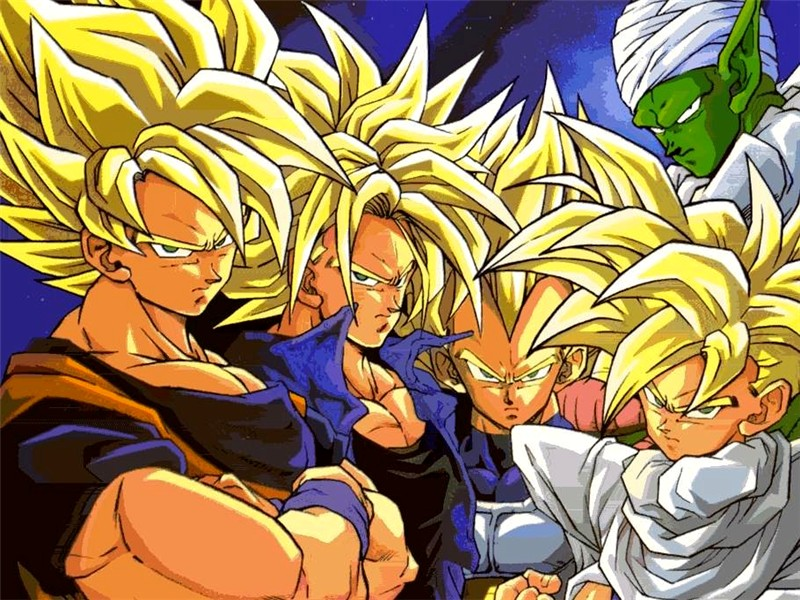
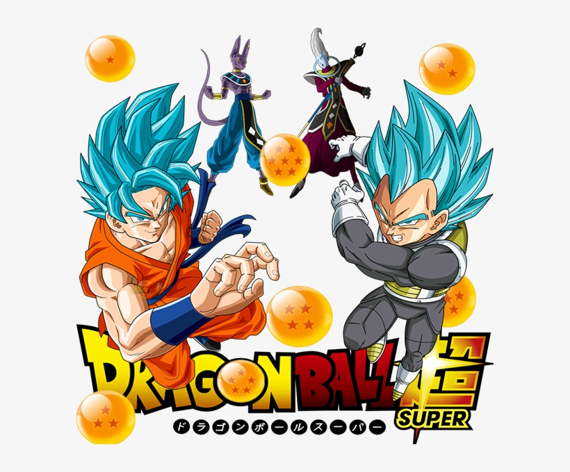

Dragon Ball
És una sèrie manga escrita i dibuixada per Akira Toriyama.
El manga va ser serialitzat a la revista setmanal Weekly Shonen Jump des del 20 de novembre de 1984 fins al 23 de maig de 1995 i
va ser editat en 42 tankōbon per Shueisha amb un total de 519 capítols.
El 2004, el manga es va rellançar en una edició de 34 volums en format kanzeban que incloïa un final nou.
La continuación de Dragon Ball que relata las aventuras de Gokū en su etapa adulta se estrenó el 26 de abril de 1989 en Fuji Television.
Fue producida también por Toei Animation y animada por los mismos estudios que la serie predecesora.
Nishio volvió como director, al igual que Kikuchi como responsable de la composición musical.
116 Está basada en los 26 volúmenes del manga que no fueron cubiertos por el otro anime.
Tuvo un total de 291 episodios, y su transmisión concluyó el 31 de enero de 1996.
1 El tema de apertura del anime es «Cha-La Head-Cha-La»* (Exc. en la saga Boo, en donde se usó «WE GOTTA POWER» en su lugar).
«Cha-La Head-Cha-La» lletra:El cielo resplandece a mi alrededor (alrededor)
Al volar, destellos brillan en las nubes sin fin
Con libertad puedes cruzar hoy el cielo azul (el cielo azul)
La verdad huye a un golpe de pronto en ti
Como si un volcán hiciera una erupción
Derrite un gran glaciar
Podrás ver de cerca un gran dragón
Cha-la head-cha-la
No importa lo que suceda
Siempre el ánimo mantendré
Cha-la head-cha-la
Vibrante mi corazón siente emoción
Haré una Genkidama
El cielo voy cruzando siempre con valor (con valor)
Miraré inmensos montes que parecen sin fin
Un paraíso oculto descubriré (descubriré)
Con amor, por siempre, y lo cuidaré
No hay razón para angustiado estar
Porque una sorpresa habrá
Y voy a encontrarla en algún lugar
Cha-la head-cha-la
No importa lo que suceda
Siempre el ánimo mantendré
Cha-la head-cha-la
Vibrante mi corazón siente emoción
Haré una Genkidama
Cha-la head-chala
No pienses nada, solo escucha
Sueños hay en tu corazón
Cha-la head-chala
No importa lo que suceda
Sonreiré el día de ho-ho-ho-ho-hoy
Link de la canço mes popular de Dragon ball: https://www.youtube.com/watch?v=pYnLO7MVKno
Rank Dragon ball series:
Dragon ball
Dragon ball Z
Dragon ball GT
Dragon Ball Super
Rank Dragon ball resultats:
- Dragon ball Super
- Dragon ball Z
- Dragon ball GT
- Dragon ball

